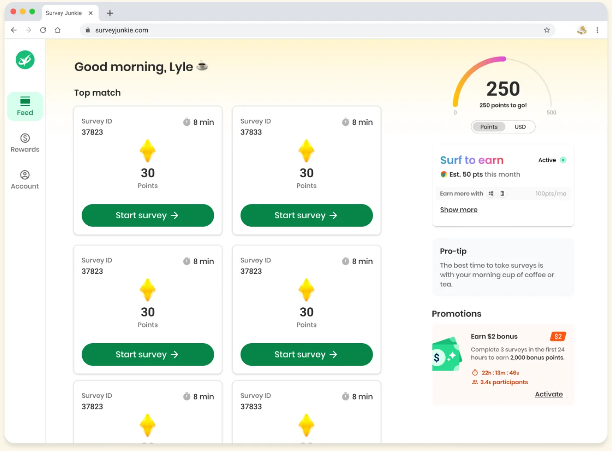
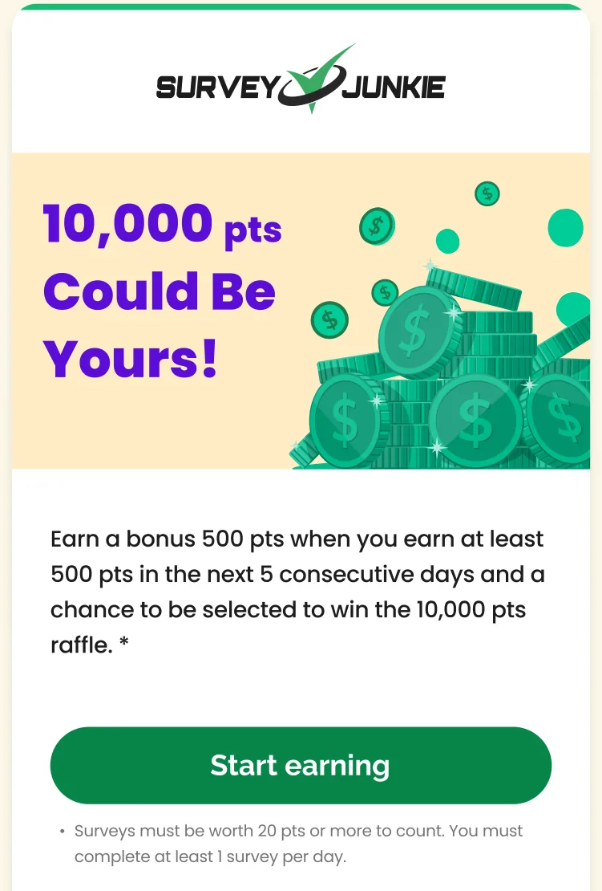
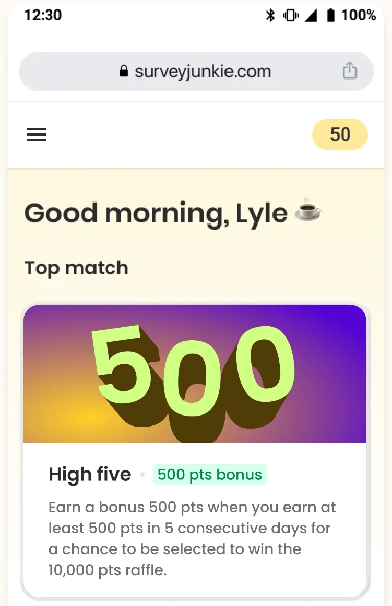
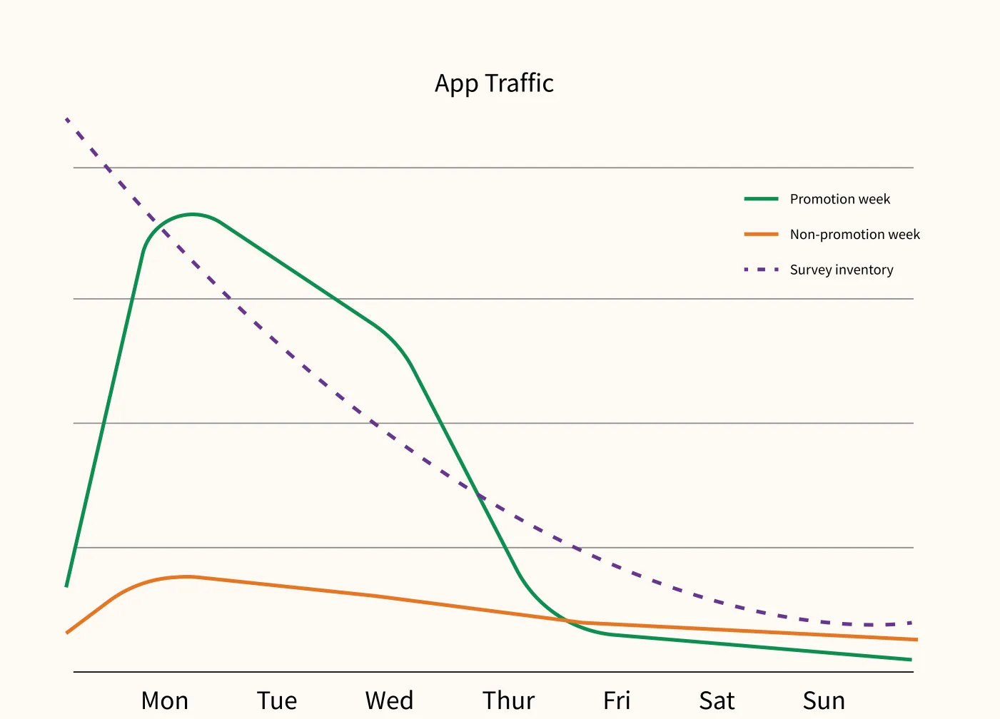
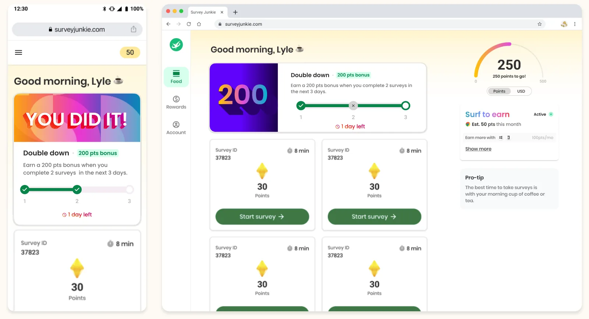

Khoa D. Pham, Principal Product Designer at Disqo, 2021–2024. Use the arrow keys or the buttons below to move through the slides.
Where it started
Survey Junkie is Disqo's app for taking surveys and earning rewards, with about 12M members.
Brands auction their surveys to platforms like ours because we have the audience.
Brands usually want very specific slices of demographics, so it is hard to qualify for a survey.
To keep answers honest, we run countermeasures that stop bad actors from exploiting the platform.
In short, members face a lot of barriers and hoops to jump through to be successful.

The Survey Junkie home screen: a feed of surveys, each worth points if you qualify.
Marketing's idea: a monthly promotion
Start a promotion program to boost engagement.
Provide a consistent, predictable event that builds a habit.
The increase in engagement should offset the spend.
A monthly cadence worked best.

The promotion email: a chance at 10,000 points, with the conditions in the small print.
The problem
Bigger rewards, less engagement
We started a monthly promotion giving away up to 10,000 points. Despite this nearly 100x increase in rewards, engagement kept falling month over month.
22%fewer surveys taken per member during the promotion
47%of members churned the week after
92%of members failed to complete it
Compared with weeks without a promotion.
The hypothesis
Too many conditions
The hypothesis: the promotions were too confusing, with too many parameters.
"Earn a bonus 500 pts when you earn at least 500 pts in the next 5 consecutive days for a chance to be selected to win the 10,000 pts raffle. Surveys must be worth 20 pts or more to count. You must complete at least 1 survey per day."
The research
Why were the promotions so complicated?
We automatically entered certain cohorts into promotions and told them by email. The design and language were written to get as many people as possible to click through, and to get past spam filters.
Insight: email conversion did not translate to in-app conversion.
The research
The average member couldn't finish
10%chance of qualifying for a survey
38 minaverage time to qualify for a first survey
50 ptsaverage survey value
44 minaverage session per day
50 ptsaverage earned per day
Surveys can end early when a quota is full, demographics don't match, or answers are inconsistent.
Insight: the average member would not complete this promotion. At about 50 points a day, five days earns about 250 points, half of the 500 required.
The research
Members were left in the dark
Members were told about the promotion only by email and by this card in the app, which disappeared after the first view.
There was no progress tracking.
If you missed a day or didn't meet one of the requirements, you wouldn't know.
Insight: the effort of tracking progress fell entirely on members.

The only in-app sign of the promotion, with no progress shown.
The research
More traffic, the same surveys
53,000peak concurrent members without a promotion
284,000with a promotion
Promotions brought in far more traffic, but survey inventory stayed roughly the same. More members competed for the same surveys, and the chance of qualifying fell from 10% to 2%.
Insight: members felt it was impossible to succeed. Motivation dropped, and they churned.

App traffic in a promotion week and a normal week, against survey inventory. Inventory is highest at the start of the week and lowest at the weekend.
The plan
Simplify the promotion: cakes and compromise
The problem: one offer stacked a long time commitment, a huge prize that wasn't guaranteed, and two more caveats.
"Earn a 200 pts bonus when you complete 2 surveys in the next 3 days."
A smaller reward, but members can earn it twice a month.
Counts completed surveys, which vary less than points and are easier to hit.
Easy to understand.
Less time to invest, with a day members can miss.
The old offer was a wedding cake. The new one is a cupcake.
The plan
Show progress in the app
The problem: members heard about the promotion once, then had no way to see where they stood.
The promotion card stays on the home screen for the whole promotion.
It tracks surveys completed toward the goal and shows the days left.
A completion state confirms when the bonus is earned.

The redesigned promotion card on mobile and desktop, with progress, days left, and a completion state.
The plan
What we did, and what we couldn't
Simplified the promotion. Done.
Made the in-app promotion experience more transparent. Done.
Adjusted survey inventory for the surge in members. Not done: acquisition spending was cut, so we couldn't.
Tested other cohorts as promotion targets. We built a "high intent member" model to identify the behaviors that mark the best candidates for future promotions.
What happened
Fewer members gave up
47% to 13%of members churned the week after a promotion
22% fewer to 8% moresurveys taken per member during the promotion
92% to 64%of members failed to complete the promotion
Compared with weeks without a promotion.
What's still unsolved
Lack of survey inventory is still the biggest problem. The options are releasing more surveys, which may be lower quality, or spending more or finding cheaper surveys.
Expand the promotion program and try different formats.
Add reminders or notifications so members know when inventory is high or when they're close to finishing.
Try other ways to raise weekly and daily engagement: a guaranteed survey of the day, discounts and coupons, or activities besides surveys.